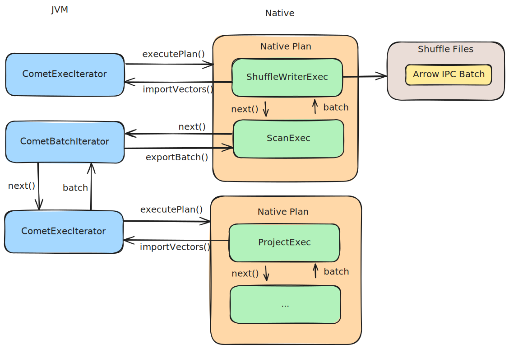

Arrow FFI Usage in Comet#
Overview#
Comet uses the Arrow C Data Interface for zero-copy data transfer in two directions:
JVM → Native: Native code pulls batches from JVM using
CometBatchIteratorNative → JVM: JVM pulls batches from native code using
CometExecIterator
The following diagram shows an example of the end-to-end flow for a query stage.

Both scenarios use the same FFI mechanism but have different ownership semantics and memory management implications.
Arrow FFI Basics#
The Arrow C Data Interface defines two C structures:
ArrowArray: Contains pointers to data buffers and metadataArrowSchema: Contains type information
Key Characteristics#
Zero-copy: Data buffers can be shared across language boundaries without copying
Ownership transfer: Clear semantics for who owns and must free the data
Release callbacks: Custom cleanup functions for proper resource management
JVM → Native Data Flow (ScanExec)#
Architecture#
When native code needs data from the JVM, it uses ScanExec which calls into CometBatchIterator:
┌─────────────────┐
│ Spark/Scala │
│ CometExecIter │
└────────┬────────┘
│ produces batches
▼
┌─────────────────┐
│ CometBatchIter │ ◄─── JNI call from native
│ (JVM side) │
└────────┬────────┘
│ Arrow FFI
│ (transfers ArrowArray/ArrowSchema pointers)
▼
┌─────────────────┐
│ ScanExec │
│ (Rust/native) │
└────────┬────────┘
│
▼
┌─────────────────┐
│ DataFusion │
│ operators │
└─────────────────┘
FFI Transfer Process#
The data transfer happens in ScanExec::get_next():
// 1. Allocate FFI structures on native side (Rust heap)
for _ in 0..num_cols {
let arrow_array = Rc::new(FFI_ArrowArray::empty());
let arrow_schema = Rc::new(FFI_ArrowSchema::empty());
let array_ptr = Rc::into_raw(arrow_array) as i64;
let schema_ptr = Rc::into_raw(arrow_schema) as i64;
// Store pointers...
}
// 2. Call JVM to populate FFI structures
let num_rows: i32 = unsafe {
jni_call!(env, comet_batch_iterator(iter).next(array_obj, schema_obj) -> i32)?
};
// 3. Import data from FFI structures
for i in 0..num_cols {
let array_data = ArrayData::from_spark((array_ptr, schema_ptr))?;
let array = make_array(array_data);
// ... process array
}
Memory Layout#
When a batch is transferred from JVM to native:
JVM Heap: Native Memory:
┌──────────────────┐ ┌──────────────────┐
│ ColumnarBatch │ │ FFI_ArrowArray │
│ ┌──────────────┐ │ │ ┌──────────────┐ │
│ │ ArrowBuf │─┼──────────────>│ │ buffers[0] │ │
│ │ (off-heap) │ │ │ │ (pointer) │ │
│ └──────────────┘ │ │ └──────────────┘ │
└──────────────────┘ └──────────────────┘
│ │
│ │
Off-heap Memory: │
┌──────────────────┐ <──────────────────────┘
│ Actual Data │
│ (e.g., int32[]) │
└──────────────────┘
Key Point: The actual data buffers can be off-heap, but the ArrowArray and ArrowSchema wrapper objects are always allocated on the JVM heap.
Wrapper Object Lifecycle#
When arrays are created in the JVM and passed to native code, the JVM creates the array data off-heap and creates
wrapper objects ArrowArray and ArrowSchema on-heap. These wrapper objects can consume significant memory over
time.
Per batch overhead on JVM heap:
- ArrowArray object: ~100 bytes
- ArrowSchema object: ~100 bytes
- Per column: ~200 bytes
- 100 columns × 1000 batches = ~20 MB of wrapper objects
When native code pulls batches from the JVM, the JVM wrapper objects are kept alive until the native code drops all references to the arrays.
When operators such as SortExec fetch many batches and buffer them in native code, the number of wrapper objects
in Java on-heap memory keeps growing until the batches are released in native code at the end of the sort operation.
Ownership Transfer#
The Arrow C data interface supports ownership transfer by registering callbacks in the C struct that is passed over
the JNI boundary for the function to delete the array data. For example, the ArrowArray struct has:
// Release callback
void (*release)(struct ArrowArray*);
Comet currently does not always follow best practice around ownership transfer because there are some cases where
Comet JVM code will retain references to arrays after passing them to native code and may mutate the underlying
buffers. There is an arrow_ffi_safe flag in the protocol buffer definition of Scan that indicates whether
ownership is being transferred according to the Arrow C data interface specification.
message Scan {
repeated spark.spark_expression.DataType fields = 1;
// The source of the scan (e.g. file scan, broadcast exchange, shuffle, etc). This
// is purely for informational purposes when viewing native query plans in
// debug mode.
string source = 2;
// Whether native code can assume ownership of batches that it receives
bool arrow_ffi_safe = 3;
}
When ownership is NOT transferred to native:#
If the data originates from a scan that uses mutable buffers (such as Iceberg scans using the hybrid Iceberg reader), then ownership is not transferred to native and the JVM may re-use the underlying buffers in the future.
It is critical that the native code performs a deep copy of the arrays if the arrays are to be buffered by
operators such as SortExec or ShuffleWriterExec, otherwise data corruption is likely to occur.
When ownership IS transferred to native:#
When ownership is transferred, it is safe to buffer batches in native. However, JVM wrapper objects will not be released until the native batches are dropped. This can lead to OOM or GC pressure if there is not enough Java heap memory configured.
Native → JVM Data Flow (CometExecIterator)#
Architecture#
When JVM needs results from native execution:
┌─────────────────┐
│ DataFusion Plan │
│ (native) │
└────────┬────────┘
│ produces RecordBatch
▼
┌─────────────────┐
│ CometExecIter │
│ (Rust/native) │
└────────┬────────┘
│ Arrow FFI
│ (transfers ArrowArray/ArrowSchema pointers)
▼
┌─────────────────┐
│ CometExecIter │ ◄─── JNI call from Spark
│ (Scala side) │
└────────┬────────┘
│
▼
┌─────────────────┐
│ Spark Actions │
│ (collect, etc) │
└─────────────────┘
FFI Transfer Process#
The transfer happens in CometExecIterator::getNextBatch():
// Scala side
def getNextBatch(): ColumnarBatch = {
val batchHandle = Native.getNextBatch(nativeHandle)
// Import from FFI structures
val vectors = (0 until schema.length).map { i =>
val array = Array.empty[Long](1)
val schemaPtr = Array.empty[Long](1)
// Get FFI pointers from native
Native.exportVector(batchHandle, i, array, schemaPtr)
// Import into Arrow Java
Data.importVector(allocator, array(0), schemaPtr(0))
}
new ColumnarBatch(vectors.toArray, numRows)
}
// Native side (simplified)
#[no_mangle]
pub extern "system" fn Java_..._getNextBatch(
env: JNIEnv,
handle: jlong,
) -> jlong {
let context = get_exec_context(handle)?;
let batch = context.stream.next().await?;
// Store batch and return handle
let batch_handle = Box::into_raw(Box::new(batch)) as i64;
batch_handle
}
#[no_mangle]
pub extern "system" fn Java_..._exportVector(
env: JNIEnv,
batch_handle: jlong,
col_idx: jint,
array_ptr: jlongArray,
schema_ptr: jlongArray,
) {
let batch = get_batch(batch_handle)?;
let array = batch.column(col_idx);
// Export to FFI structures
let (array_ffi, schema_ffi) = to_ffi(array.to_data())?;
// Write pointers back to JVM
env.set_long_array_region(array_ptr, 0, &[array_ffi as i64])?;
env.set_long_array_region(schema_ptr, 0, &[schema_ffi as i64])?;
}
Wrapper Object Lifecycle (Native → JVM)#
Time Native Memory JVM Heap Off-heap/Native
────────────────────────────────────────────────────────────────────────
t0 RecordBatch produced - Data in native
in DataFusion
t1 FFI_ArrowArray created - Data in native
FFI_ArrowSchema created
(native heap)
t2 Pointers exported to JVM ArrowBuf created Data in native
(wraps native ptr)
t3 FFI structures kept alive Spark processes Data in native
via batch handle ColumnarBatch ✓ Valid
t4 Batch handle released ArrowBuf freed Data freed
Release callback runs (triggers native (via release
release callback) callback)
Key Difference from JVM → Native:
Native code controls lifecycle through batch handle
JVM creates
ArrowBufwrappers that point to native memoryRelease callback ensures proper cleanup when JVM is done
No GC pressure issue because native allocator manages the data
Release Callbacks#
Critical for proper cleanup:
// Native release callback (simplified)
extern "C" fn release_batch(array: *mut FFI_ArrowArray) {
if !array.is_null() {
unsafe {
// Free the data buffers
for buffer in (*array).buffers {
drop(Box::from_raw(buffer));
}
// Free the array structure itself
drop(Box::from_raw(array));
}
}
}
When JVM is done with the data:
// ArrowBuf.close() triggers the release callback
arrowBuf.close(); // → calls native release_batch()
Memory Ownership Rules#
JVM → Native#
Scenario |
|
Ownership |
Action Required |
|---|---|---|---|
Temporary scan |
|
JVM keeps |
Must deep copy to avoid corruption |
Ownership transfer |
|
Native owns |
Copy only to unpack dictionaries |
Native → JVM#
Scenario |
Ownership |
Action Required |
|---|---|---|
All cases |
Native allocates, JVM references |
JVM must call |